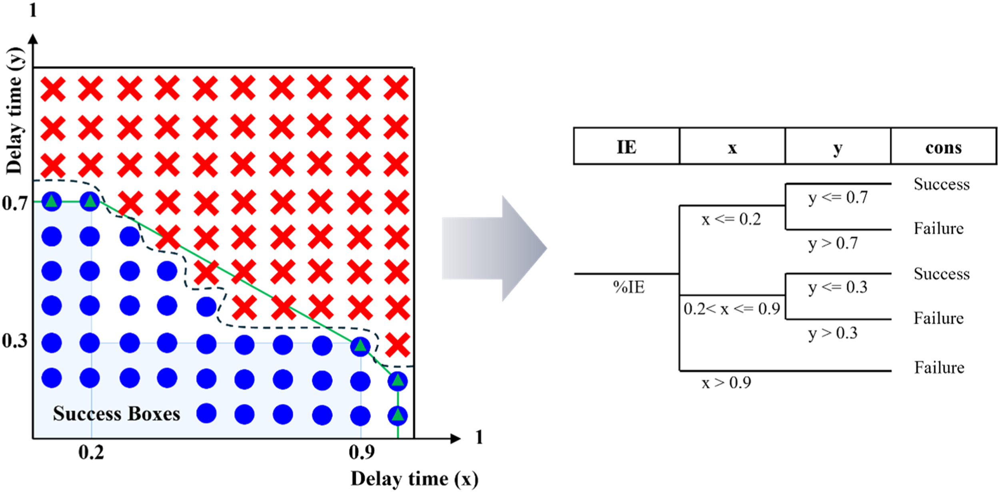
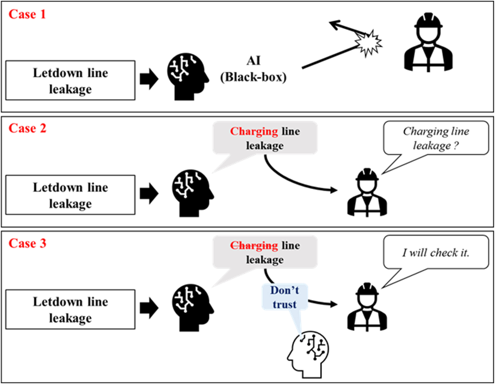
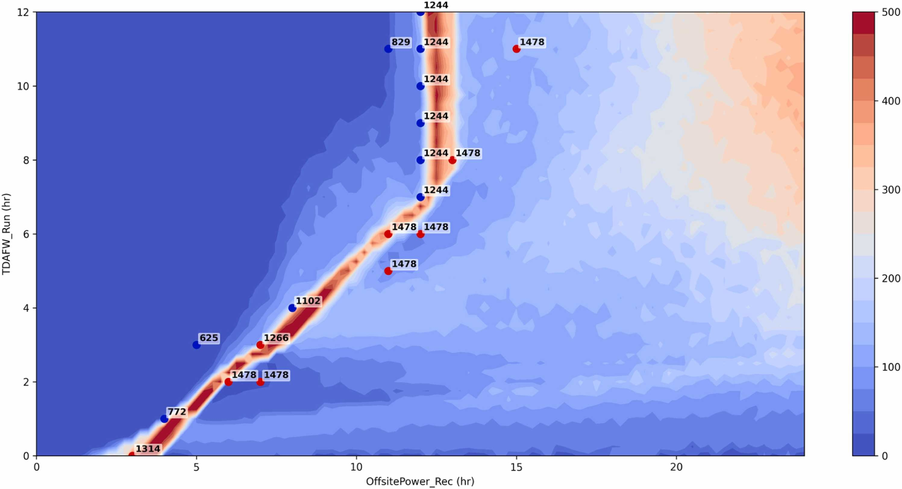
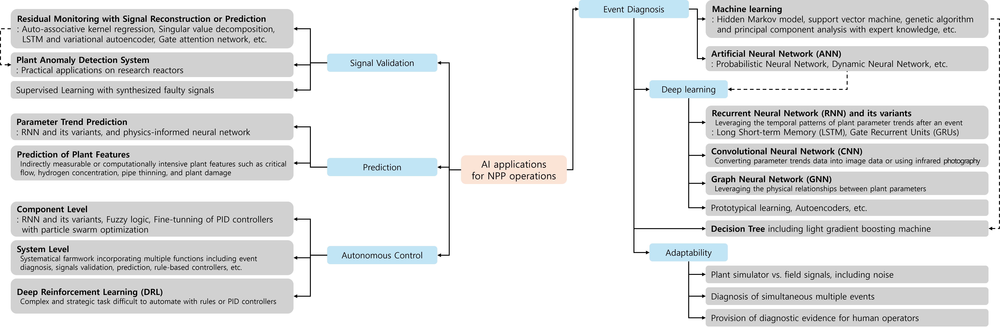
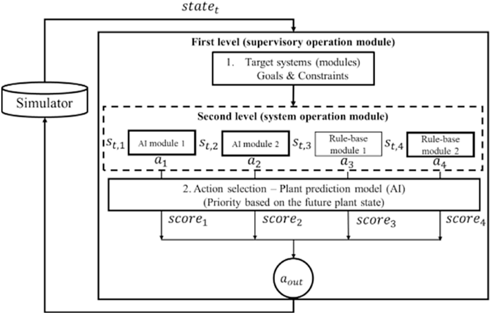
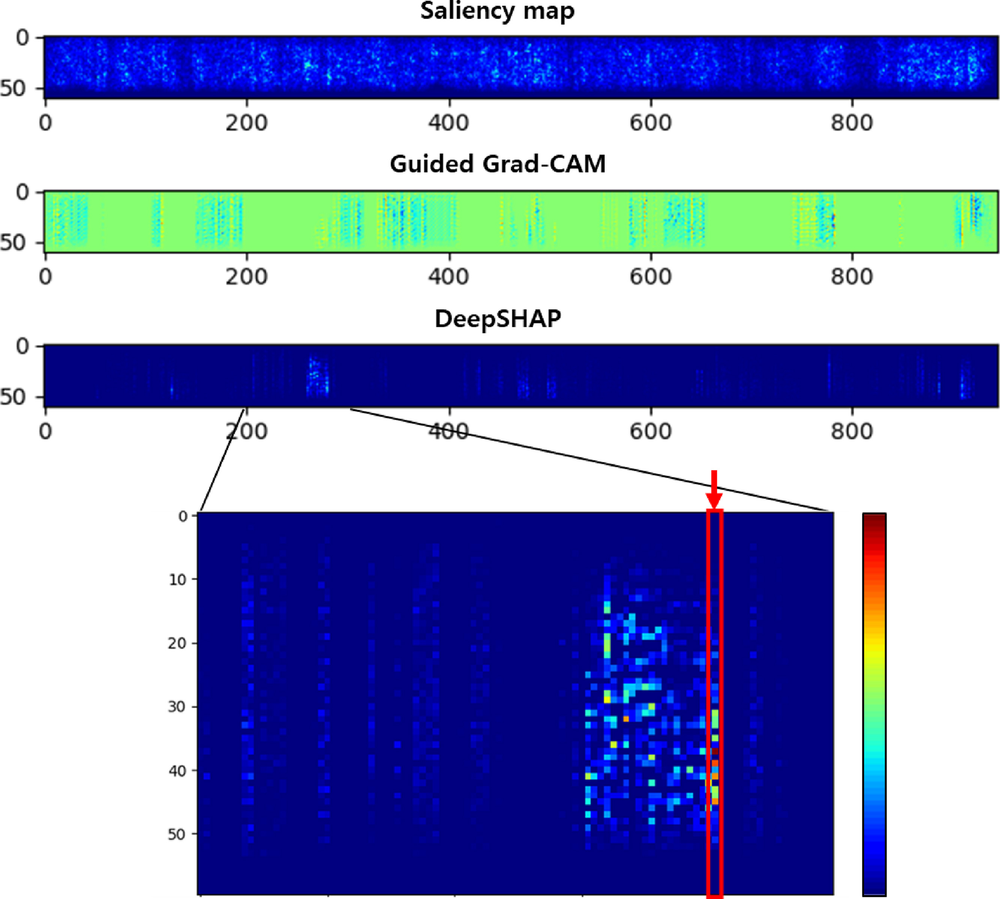
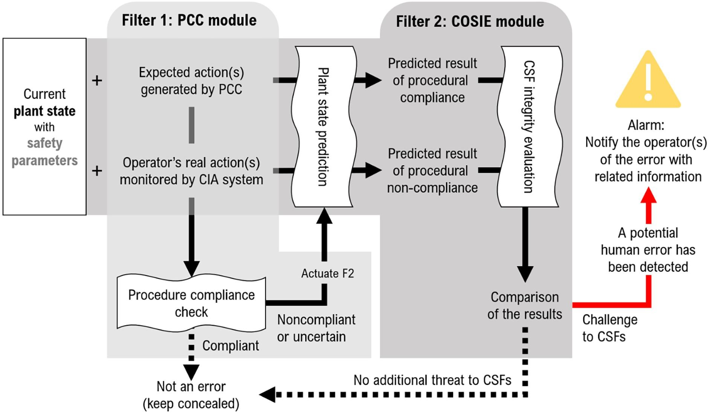
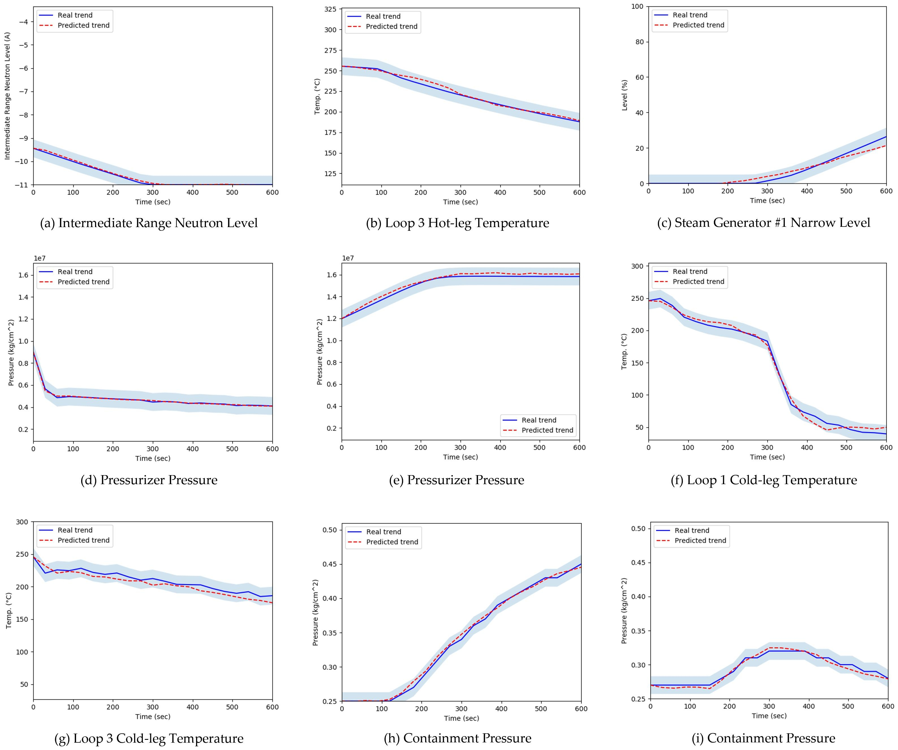
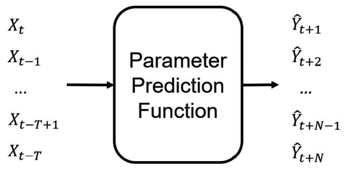

Fig. — Automatic accident sequence generation
I am Junyong Bae. I build deep-learning methods for nuclear power plant safety: dynamic probabilistic safety assessment, anomaly & attack detection on I&C data, and surrogate models that know when they might be wrong.
Deep-learning-guided sampling of accident scenarios, limit-surface search, and automatic accident-sequence generation for risk assessment.
Detecting abnormal events and false-data-injection attacks on NPP instrumentation & control data, with explainable diagnoses.
Epistemic uncertainty quantification for surrogate models and parameter-trend prediction, so models can flag what they don't know.










31 citations — most-cited first-author work.

Outstanding Doctoral Dissertation Award, Department of Nuclear Engineering, UNIST
Best Student Paper Award, ISOFIC 2024
KNS Autumn Best Paper Award
KNS Autumn Best Paper Award · Doosan Enerbility Scholarship
5th Park Chang-kyu PSA Student Paper Award
Excellence Award, Nuclear–AI Convergence Case Study Presentation
KNS Student Conference Best Paper Award